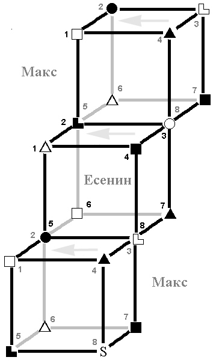

3.4. Активация: Россия (Есенин, ИЭИ) ↔ РПЦ (Макс, ЛСИ)
|
А вы пробовали объяснить русскому человеку, чем мазохизм отличается от патриотизма? |
Активация как вид взаимоотношений уже разбиралась выше, так что не будем повторяться и сократим описание, разобрав лишь конкретную пару в приложении к ситуации. Стоить отметить: в данном случае пара интровертная, что подразумевает более тесное взаимоотношение.
I. 1 ↔ 6, 4 ↔ 7
ИЭИ(1) → ЛСИ(6): БИ. Воздействие базовой функции Есенина на референтную Макса. Интуиция времени здесь, пожалуй, выражается все в том же стремлении к «вечным истинам», причем в этом случае церковь как бы улавливает потребности народа и учится «вещать по теме». Поскольку для ИЭИ характерно ощущение бесконечности времени, то далее вещания речь не идет – торопиться-то некуда.
Обратное воздействие крайне мало. Может, Максу и хотелось бы сделать что-то вовремя, но это наталкивается на непоколебимую уверенность Есенина в неисчерпаемости времени. Применительно к нашей теме: официальная церковь не годится на роль «подталкивателя к срочным действиям» независимо от их актуальности.
ЛСИ(1) → ИЭИ(6): БЛ. РПЦ настоятельно навязывает России свои правила. В иллюстрации не нуждается – достаточно оглядеться вокруг, сняв розовые очки [20]. Обратное влияние пренебрежимо мало. Если бы не было одновременных отношений с христианской моралью и ожидания правил оттуда, то было бы все вообще грустно...
ЛСИ(4) → ИЭИ(7): ЧИ. Вариантов развития, в том числе и в плане действий, по болевой много не наработаешь. Уже отмечалось стремление РПЦ к единственно верному с их точки зрения варианту развития событий, без каких-либо альтернатив, что навязать с болевой на ограничительную практически нереально. Зато как раз по этой функции церковники иногда получают удар от населения– альтернативный вариант, который принимается в штыки. Впрочем, историю расколов мы тут приводить не будем. Напомним, что ограничительная функция работает импульсами, а не перманентно – так что описываемые явления происходят редко.
ИЭИ(4) → ЛСИ(7): ЧЛ. Вопрос «Что делать?» российскому народу донести до РПЦ нереально, а обратное воздействие «Вот это!!!» бьет по болевой. Может, именно поэтому официальную церковь на Руси не любили никогда – Жуков и так знает, что ему делать, а для Есенина прямые декларативные указания попадают на болевую функцию.
II. 2 ↔ 5, 3 ↔ 8
ИЭИ активирует у ЛСИ этику эмоций, пытаясь сделать церковь «более человечной», чему та с успехом сопротивляется, так как акцент на эго-блок у церковного аппарата очевиден. ЛСИ же активирует у ИЭИ волевую сенсорику – естественно, с соответствующей идеологией в нагрузку.
Обратное воздействие, 5 → 2, как уже говорилось, пренебрежимо мало и кратковременно.
3 → 8. Поддержка ролевой функции РПЦ (БЭ) – «мы хорошие и доброжелательные!» – со стороны народа, который сам по себе вполне дружелюбен, и не имеет ничего против таких деклараций, несмотря на то, что декларациями здесь дело и заканчивается. Ролевая же ИЭИ (БС) – стремление к показухе – успешно поддерживается пышностью церковных церемоний, культовых зданий и т.д.
В общем можно сделать вывод: при условии, что официальная церковь не командует декларативно (а сейчас у нее нет такой возможности, приходится действовать через лоббистов), русский народ относится к РПЦ с соционической точки зрения вполне неплохо, причем ничего не понимая в ее интригах. Видимо, отсюда и появляются перлы типа «да, я – атеист, но православный, как и положено русскому!».